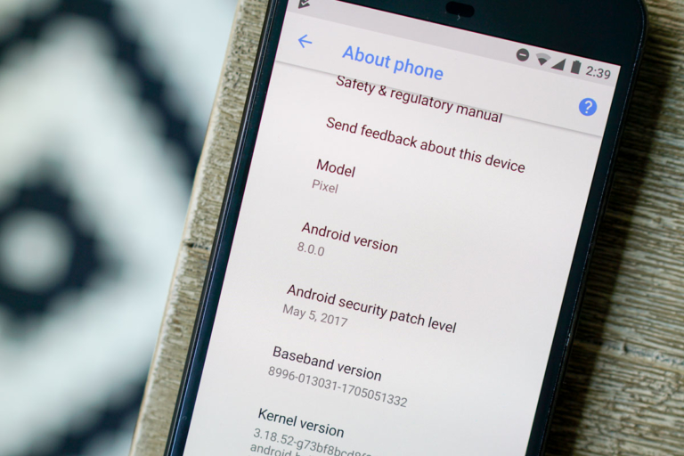
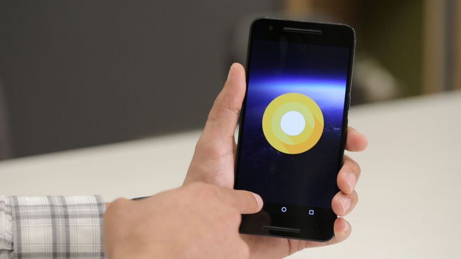

Android 8.0 llegará en el terecer trimestre del año
Android O se convierte oficialmente en Android 8.0, pero su nombre completo todavía sigue siendo un misterio. ¿Android Oreo?

Todos sabemos que Android O es la siguiente encarnación del sistema operativo de Google, y muchos ya conocen que el dispositivo Pixel será el primer smartphone en recibirlo. Pero todos desconocían a ciencia cierta exactamente de qué versión de Android se trataba Android O, hasta ahora.
Google liberó este jueves la tercera versión previa de Android O para dispositivos Pixel y Nexux, la nueva versión de su sistema operativo móvil que en el tercer trimestre del año reemplazará a la versión Android Nougat.

Esta versión preliminar de Android revela en las configuraciones su numeración y en ella Google está integrando las interfaces de programación de aplicaciones (API, por sus siglas en inglés) finales, al igual que una actualización de Android Studio SDK.

Con esto, los desarrolladores pueden comenzar a probar sus apps para asegurarse de que funcionen de la mejor manera con los nuevos límites automáticos que prometen extender la duración de la batéria y que además las nuevas novedades del Android funcionen sin algún problema.

Esta es la tercera y penúltima versión para desarrolladores de Android O. La próxima beta llegará en julio, justo antes de que las versión definitiva comience a llegar a los Google Pixel en el mes de agosto. Aquellos usuarios de los terminales compatibles, ya pueden probar las novedades que llegan con esta actualización si forman parte del programa Android Beta Program, o bien instalando las imágenes de fábrica de forma manual.